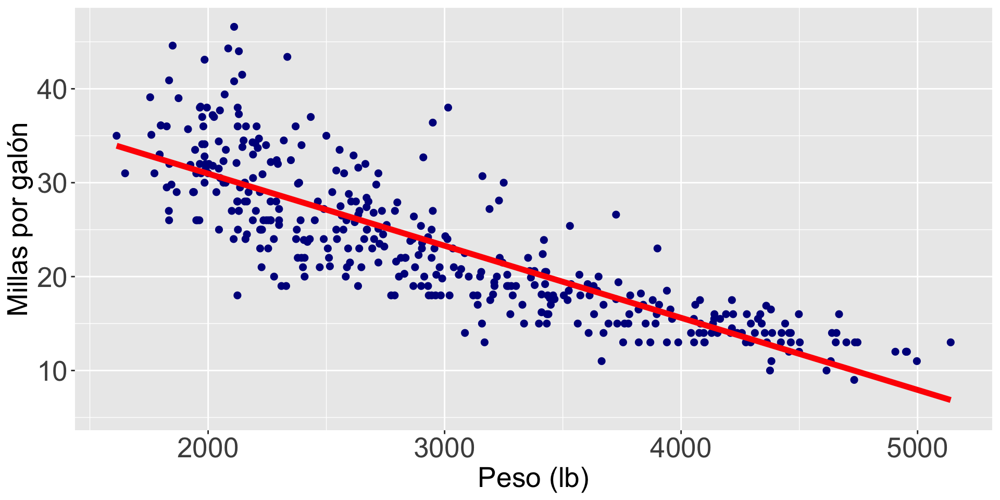

# Nos se te olvide instalar la librería "ggformula" en Google Colab.
# install.packages("ggformula")
library(readxl)
library(ggplot2)
library(ggformula)
library(dplyr)Introducción a la Regresión Lineal Simple
IN2039: Visualización de Datos
Agenda
Introducción
Relación entre dos variables numéricas
Regresión lineal simple
Carguemos las librerías
Carguemos las librerías ggplot2, ggformula, readxl, y dplyr en Google Colab y R antes de comenzar.
Ejemplo
Usemos datos de 392 autos sobre sus millas por galón, número de cilindros, caballos de fuerza, peso, aceleración, año, origen, entre otras variables.
Los datos están en el archivo “auto_dataset.xlsx”.
auto_data = read_excel("auto_dataset.xlsx")
auto_data %>% head() # A tibble: 6 × 9
mpg cylinders displacement horsepower weight acceleration year origin
<dbl> <dbl> <dbl> <chr> <dbl> <dbl> <dbl> <chr>
1 18 8 307 130 3504 12 70 American
2 15 8 350 165 3693 11.5 70 American
3 18 8 318 150 3436 11 70 American
4 16 8 304 150 3433 12 70 American
5 17 8 302 140 3449 10.5 70 American
6 15 8 429 198 4341 10 70 American
# ℹ 1 more variable: `car name` <chr>Relación entre dos variables numéricas
Principio 1: Formula el mensaje
Preguntas que podemos contestar con la regresión lineal simple
¿Existe una relación entre una variable de respuesta y los predictores?
¿Qué tan fuerte es la relación?
¿Cuál es la incertidumbre?
¿Con qué precisión podemos predecir un resultado futuro?
¿Hay una relación entre el peso de un auto y sus millas por galón?

Problema de regresión
Objetivo: encontrar la mejor función \(f(X)\) del predictor \(X\) que describa la respuesta \(Y\).
. . .
En términos matemáticos, queremos establecer la siguiente relación
\[ Y = f(X) + \epsilon, \]
donde \(\epsilon\) es un error natural (aleatorio).
- En la práctica es muy difícil saber la verdadera estructura de la función \(f(X)\).
Lo mejor que podemos hacer es construir una aproximación (función) \(\hat{f}(X)\).
Hay varias estrategias para construir \(\hat{f}(X)\), una de las más utilizadas es:
- Definir una “estructura” o “fórmula” simple.
- Estimar los elementos de la “fórmula” usando los datos.
Regresión lineal simple
Modelo de regresión lineal
Una función \(f(X)\) muy común para predecir una respuesta (\(Y\)) es el modelo de regresión lineal.
Tiene la forma matemática:
\[ \hat{Y}_i = \hat{\beta}_0 + \hat{\beta}_1 X_i, \]
- Donde \(i\) es el indice de las \(n\) observaciones, y
- \(\hat{Y}_i\) es la predicción del valor real de la respuesta \(Y\) asociada a un valor del predictor igual a \(X_i\).
- Los valores \(\hat{\beta}_0\) y \(\hat{\beta}_1\) se llaman coeficientes del modelo.
Para nuestro ejemplo
\(\hat{Y}_i = 46.32 -0.0076 X_i\)
La fórmula
\(\text{mpg}_i = 46.32 - 0.0076 \times \text{peso}_i\)
Interpretación de los coefficientes
¿Qué significa \(\hat{\beta}_0 = 46.32\)?
. . .
\(\hat{\beta}_0\) es el valor promedio de la respuesta cuando \(X_i = 0\).

¿Tiene sentido \(\hat{\beta}_0 = 46.32\)?

. . .
No! Porque no hay autos con un peso igual a 0.
¿Qué significa \(\hat{\beta}_1 = - 0.0076\)?
. . .
\(\hat{\beta}_1\) es el cambio promedio en la respuesta al aumentar \(X_i\) en una unidad.

Interpretación de \(\hat{\beta}_1\)
Por cada libra extra en el peso de un auto, el auto tiene una reducción promedio de 0.0076 millas por galón.
¿Caen todos los puntos exactamente sobre la linea?
. . .
No! El modelo tiene errores.
. . .
Técnicamente, el error de la i-ésima observación es \(e_i = Y_i - \hat{Y}_i = Y_i - \hat{\beta}_0 - \hat{\beta}_1 X_i\).
De hecho …
Los coeficientes \(\hat{\beta}_0\) y \(\hat{\beta}_1\) se obtienen al minimizar la suma de cuadrados de los errores.
En otras palabras, \(\hat{\beta}_0\) y \(\hat{\beta}_1\) son los valores que minimizan la siguiente expresión:
\[ (Y_1 - (\hat{\beta}_0 + \hat{\beta}_1 X_1 ))^2 + (Y_2 - (\hat{\beta}_0 + \hat{\beta}_1 X_2 ))^2 + \cdots + (Y_{n} - (\hat{\beta}_0 + \hat{\beta}_1 X_{n} ))^2 \]
para las \(n\) observaciones.
Inspeccionar los errores
El comportamiento de los errores indica si el modelo es correcto o no. Si el modelo es correcto, los errores se deben de comportar como sigue:
- En promedio, deben de estar alrededor de 0 para cada valor predecido \(\hat{Y}_i\).
- Tener una dispersión constante alrededor de cada valor predecido \(\hat{Y}_i\).
- Ser independientes los unos de los otros. Es decir, no estar relacionados.
Análisis gráfico de errores
Para evaluar estos comportamientos, usamos dos gráficas de dispersión de los errores:
Eje Horizontal = Errores y Eje Vertical = Predicciones. Está gráfica permite validar los primeros dos supuestos (dispersión constante).
Eje Horizontal = Errores y Eje Vertical = Tiempo en que se tomó la observación. Está gráfica permite validar el tercer supuesto (independencia).
Dispersión constante
Code
mi_modelo = lm(mpg ~ weight, data = auto_data)
datos_modelo = tibble("Predicciones" = mi_modelo$fitted,
"Errores" = mi_modelo$residuals)
mi_diagrama_residuos = gf_point(Errores ~ Predicciones, data = datos_modelo, color = "darkblue", size = 2)
mi_diagrama_residuos = mi_diagrama_residuos + theme(axis.text=element_text(size=20), axis.title=element_text(size=20))
mi_diagrama_residuos = mi_diagrama_residuos %>% gf_hline(yintercept = 0, lty = 2)
mi_diagrama_residuos
Errores independientes
Code
mi_modelo = lm(mpg ~ weight, data = auto_data)
datos_modelo = tibble("Tiempo" = 1:nrow(auto_data),
"Errores" = mi_modelo$residuals)
mi_diagrama_residuos = gf_point(Errores ~ Tiempo, data = datos_modelo, color = "darkblue", size = 2)
mi_diagrama_residuos = mi_diagrama_residuos + theme(axis.text=element_text(size=20), axis.title=element_text(size=20))
mi_diagrama_residuos = mi_diagrama_residuos %>% gf_hline(yintercept = 0, lty = 2)
mi_diagrama_residuos
Comentarios finales
Las dos gráficas no validan los supuestos del modelo de regresión lineal.
Existen métodos para corregir esto pero no los veremos aquí.
Si ambos supuestos no son validados, entonces el modelo de regresión lineal se usa sólo como una linea de tendencia o referencia de los datos.
Si se validan ambos supuestos, entonces el modelo se puede usar para predecir la respuesta en nuevas observaciones y para verificar si existe una relación significativa entre \(Y\) y \(X\).
Veremos más sobre regresión lineal en IN1002B e IN1001B.